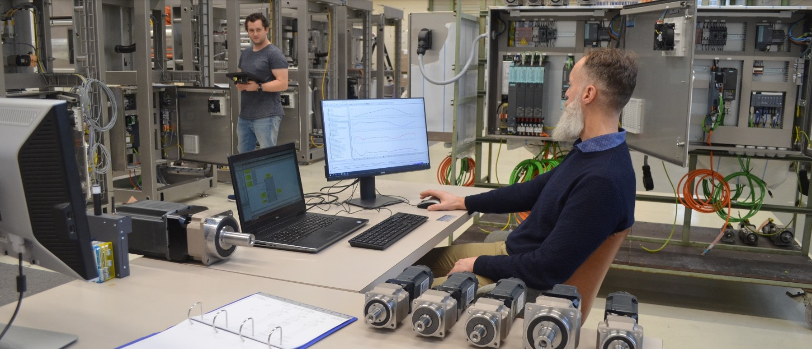
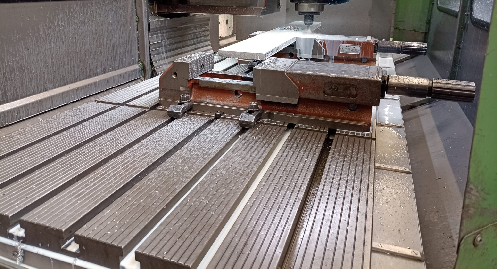

Machines engineeren en bouwen
OP- EN AFWIKKEL MACHINES

Modificeren van machines
Aanpassen aan nieuwe eisen

Retrofitten van bestaande machines
Vernieuwde soft- hardware

Onderhoud en reparatie
Snelle integratie voor efficiënte operatie

Uitlijning van machines
Hogere kwaliteit, minder onderhoud
